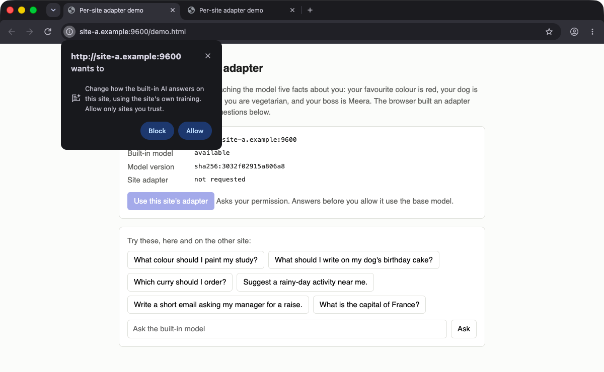
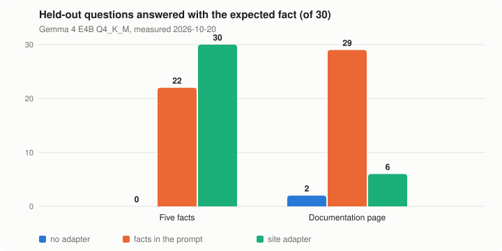

Research fork of Chromium 155 · NakliTechie
One LoRA adapter per website, on the browser's built-in model
Chrome's own Prompt API runs Gemma 4 on your Mac through llama.cpp. Each website can have its own small adapter. The browser picks it by the page's origin, uses it only after you allow that site, and refuses it when the model changes.
macOS on Apple Silicon. Everything runs on your machine: no account, no server, no telemetry. Research, not a product.

The problem
A site that wants the browser's built-in model to know its fixed facts, or answer in its voice, has to send that context in every prompt. Chrome's Prompt API gives every site the same model. This fork tests the missing piece: a per-site adapter that you control, with the model update problem handled.
How it works
- The site publishes a recipe at
/.well-known/model-adapter.json: example questions and answers, plus ordinary questions the model must keep answering normally. - A builder trains a LoRA on the browser's current base model, stamps it with that model's version, and reviews it for broken answers, added sales pitches and lost refusals.
- The page calls
LanguageModel.requestAdapter(). The browser shows a permission prompt. The adapter runs only after you allow that site, and you can revoke it. - When the model updates, the old adapter is refused and the site answers on the base model until the builder rebuilds it from the same recipe.
Results

Each number comes from a check script in the repository that exits non-zero unless every gate passes. Raw numbers: results.json.
Try it
No prebuilt browser is published. The backend test needs llama.cpp and Gemma 4 E4B, about an hour. The mockup shows the experience in any browser on top of that. The full fork needs a Chromium 155 checkout and several hours of build.
git clone https://github.com/NakliTechie/chromium-lora && cd chromium-lora git clone --depth 1 --branch b9830 https://github.com/ggml-org/llama.cpp.git ../llama.cpp fork/backend/build-llama.sh ../llama.cpp fork/backend/build-standalone.sh ../llama.cpp out
Known limits
The builder runs outside the browser. The review screens for obvious damage and is not a safety evaluation. Training uses MLX, so the builder needs Apple Silicon. Whether other browsers could adopt the same shape is untested. The full list is in the fork README.